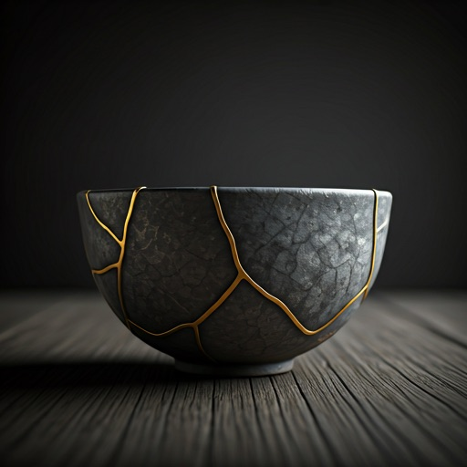
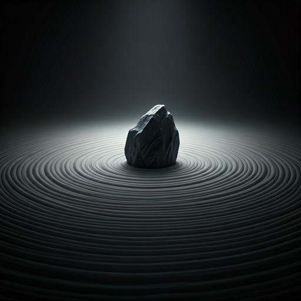
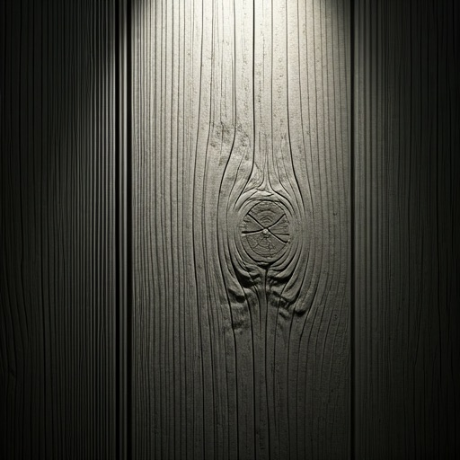
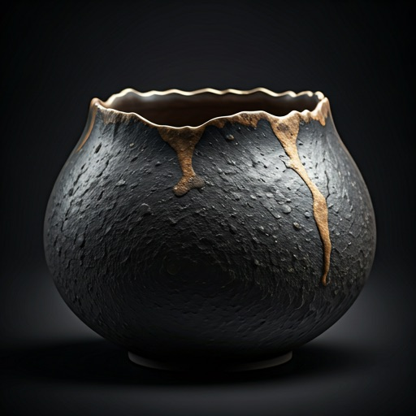
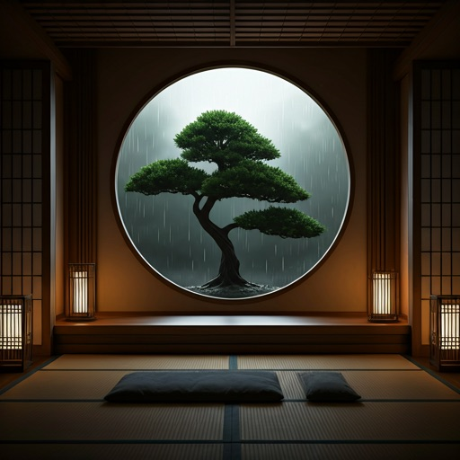

THE ZEN ARCHETYPE
The beauty of
The beauty of
imperfection.
Exploring the resonance of Wabi-Sabi. A digital sanctuary dedicated to the tactile, the weathered, and the transient.
DISCOVER THE VOID

"Nothing lasts, nothing is finished, and nothing is perfect."
Natural
Symmetry.
01. KANSO
Simplicity through the elimination of clutter. Each element serves a sensory purpose.
02. SHIBUMI
Beauty in the understated. A focus on raw textures like clay, linen, and ash.


Artifact 003:
The Weathered Vessel
Hand-coiled clay fired in an anagama kiln for seven days. The ash deposits create a unique glaze that cannot be replicated.

Material
Black Clay
Process
Wood Fired
Origin
Shigaraki
Year
2024
park
"Find the infinite in the singular pebble."
THE ARCHIVE
Curated Collections
